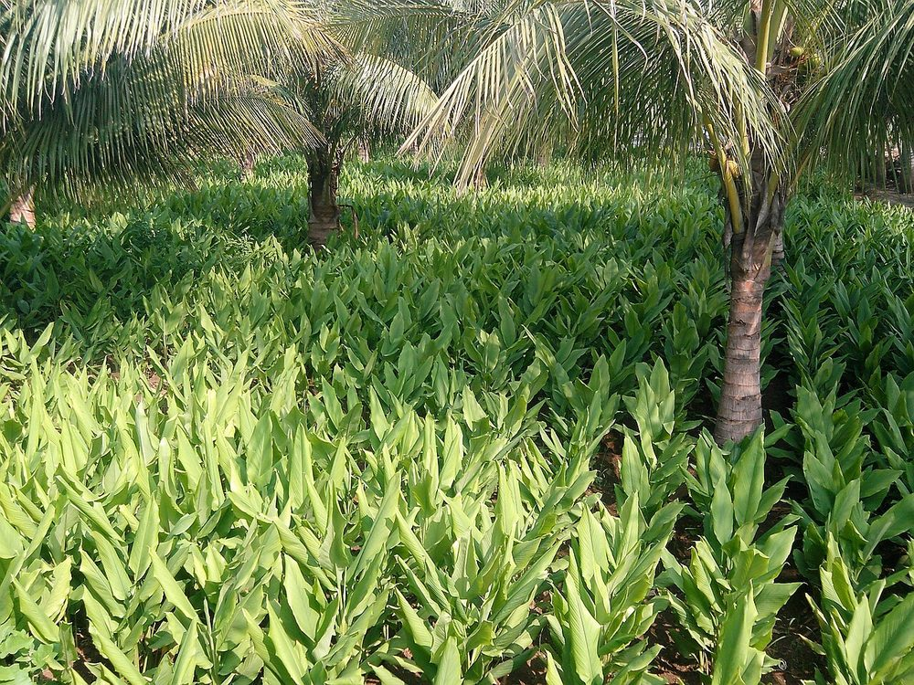
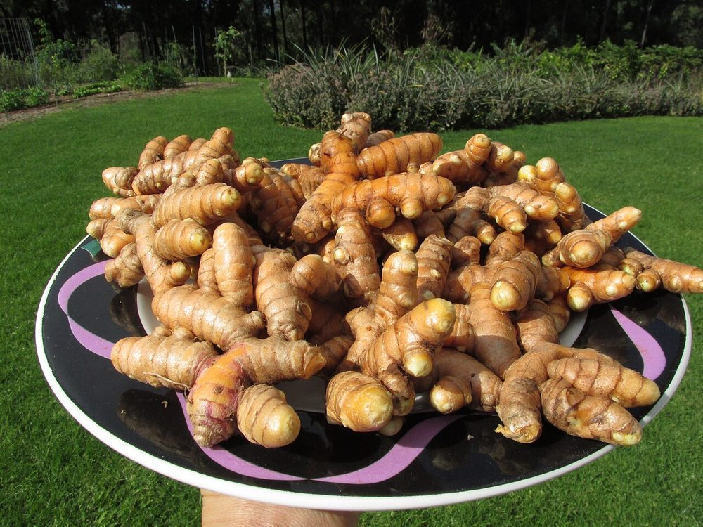

Épice
Curcuma
Curcuma longa — rhizome orangé
- Cycle 8 à 9 mois
- Mise à jour 2026-10-26
- Niveau de confiance faible

Présentation et utilisations
Proche du gingembre, cultivé pour son rhizome orangé séché et broyé : épice, colorant, usage cosmétique. La transformation est simple (séchoir + moulin) et permet d'augmenter la valeur.
Climat et sols
Chaleur, humidité, ombrage léger. Sol meuble et drainé, riche en matière organique. Mêmes contraintes que le gingembre : pas d'eau stagnante.
Variétés adaptées
Les variétés se distinguent par la couleur et la teneur en curcumine. Disponibilité locale non documentée ici.
Calendrier cultural
Plantation en saison des pluies, récolte 8 à 9 mois plus tard après jaunissement des feuilles.
Préparation du terrain
Buttes ou planches surélevées, sol profondément ameubli, compost mûr.
Semis et plantation
Plantation de fragments de rhizome avec bourgeon, peu enfoncés, espacés.
Entretien, fertilisation, irrigation
Paillage, sarclages légers, apports organiques modérés. Drainage impératif.
Engrais : quoi, combien, quand
Même famille et même logique que le gingembre : organique au départ, potassium en fin de cycle.
| Apport | Dose | Quand | Comment |
|---|---|---|---|
| OrganiqueFumier ou compost | 10 à 15 t/ha | Avant la plantation | Incorporé dans les billons |
| MinéralAzote (N) | 50 à 75 kg/ha | 1/2 à 30 jours, 1/2 à 75 jours | Épandu entre les rangs |
| MinéralPhosphore (P2O5) | 30 à 50 kg/ha | À la plantation | En poquet |
| MinéralPotassium (K2O) | 60 à 90 kg/ha | À 90 puis 150 jours | En bande |
Doses par hectare de culture pure, à ajuster selon l'analyse de sol. Sans analyse, rester dans la fourchette basse et fractionner l'azote : c'est le geste qui évite de brûler la culture et de payer un engrais qui ne sera pas valorisé.
Maladies, ravageurs et prévention
Pourritures de rhizome en sol détrempé, insectes du rhizome. Rotation et drainage.
Récolte et post-récolte
Soulever la butte à maturité, laver, trier. Réserver des rhizomes sains pour la replantation.
Conservation et transformation
Séchage (tranches fines) puis stockage au sec, ou broyage en poudre. Le séchage lent favorise les moisissures.
Coûts, rendements et débouchés
Débouchés : poudre, épiceries, cosmétique artisanale. Aucun prix vérifié. Postes de dépense : semence, préparation, séchage, conditionnement.
Tutoriel étape par étape
- 1. Préparer le sol
Faites des buttes hautes, en terre meuble, avec du compost mûr.
- 2. Planter les rhizomes
Plantez des morceaux de rhizome avec un bourgeon, peu profond, espacés régulièrement.

Thamizhpparithi Maari · CC BY-SA 3.0 · Wikimedia Commons - 3. Entretenir
Paillez, sarclez légèrement, drainez, et n'abusez pas des apports organiques.
- 4. Récolter
Récoltez quand les feuilles jaunissent, soulevez sans blesser, lavez et triez.

Forest and Kim Starr · CC BY 3.0 us · Wikimedia Commons - 5. Transformer
Tranchez fin, séchez vite, broyez et rangez à l'abri de la lumière.
Sources, vérification et limites
- Base de connaissances interne · knowledge/agronomie.md (consulté le 2026-10-21)
Limites de cette fiche. Aucune donnée locale vérifiée sur variétés, rendements, prix, débouchés industriels. À compléter par une enquête de marché.
Dernière mise à jour : 2026-10-26. Les prix, rendements et calendriers locaux ne sont mentionnés que lorsqu'ils sont documentés ; dans le doute, la fiche le dit.